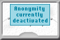

|
A picture like this shows that you are connected to an anonymizer service.
The gauge displays an approximate value for anonymity.
The more users are on a cascade, and the more traffic they generate,
the higher your anonymity is on this cascade.
|
|  |
This picture appears if anonymity is switched off. Depending on the settings you specified here, all internet traffic will be blocked or is allowed after confirmation only. |
 |
If this picture is displayed, a connection to the service is established and you can surf anonymously, nevertheless no information could be gathered about the amount of users and traffic of this cascade. This could be because of an error in the InfoService, because of a slow internet connection or since you have forbidden JonDo to do automatic InfoService requests. |
 |
While JonDo is tying to connect to an anonymizer service, this picture is being shown.
Meanwhile, no connection via HTTP/HTTPS/FTP to the internet is passed through JonDo.
This is only possible again if JonDo has connected or if the connection attempt has been aborted. |